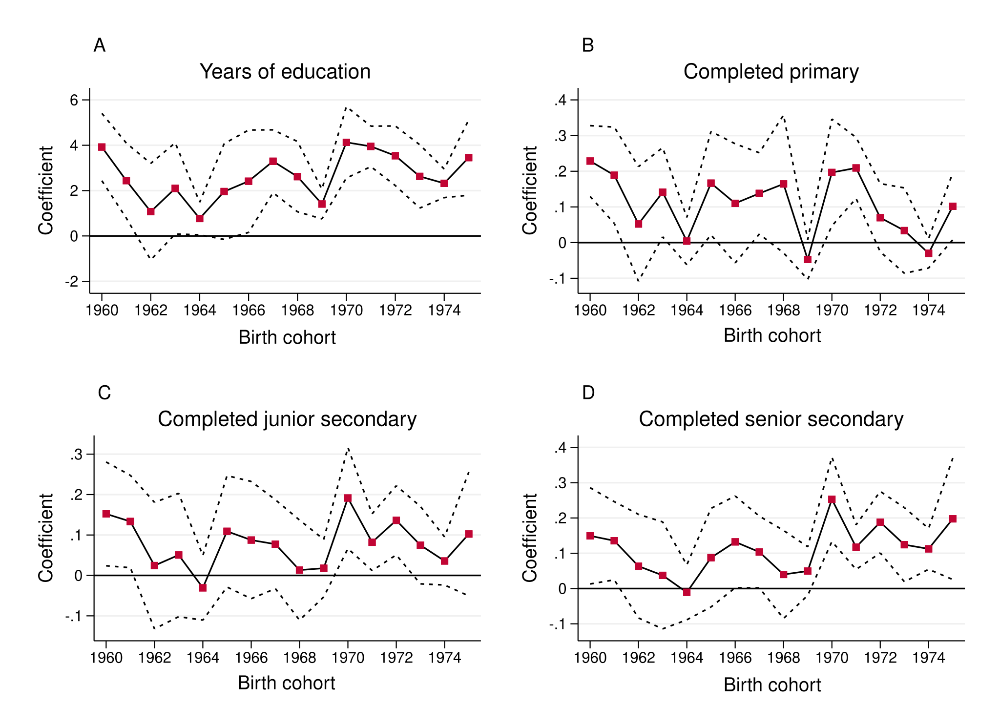
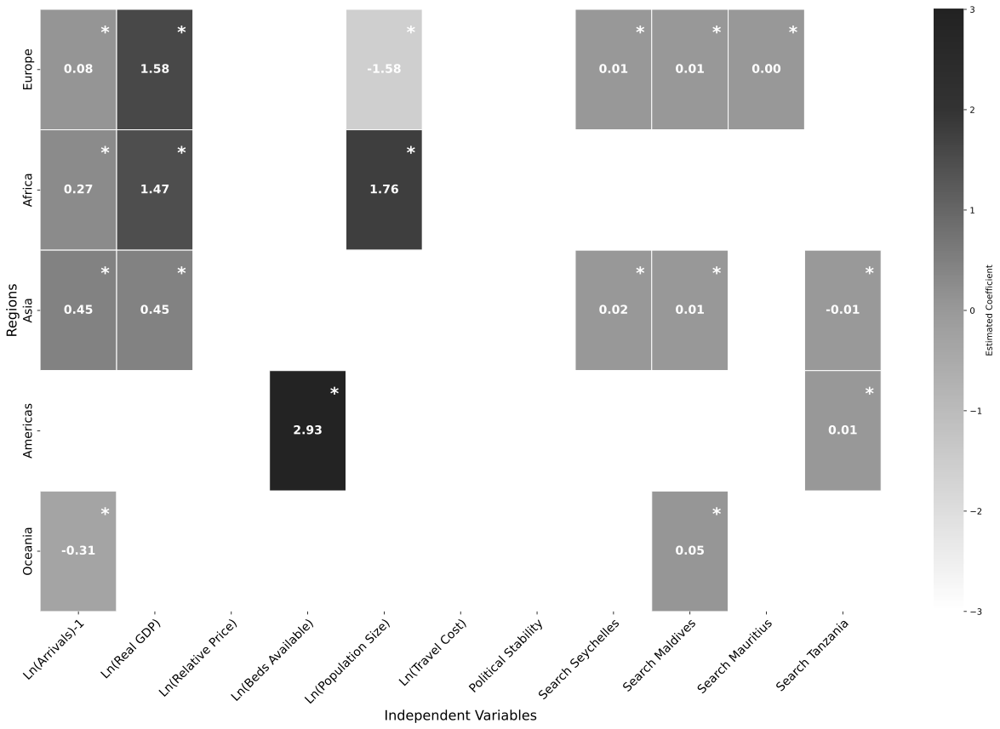

Published · 2024
Neron Sifflore and Rasyad Parinduri
2024 · PNAS
Abstracts and selected figures from working drafts and in-progress projects.
In 1976, Nigeria introduced its free education programme that abolished fees in all public primary schools. Using data collected 33 years after the scheme's introduction, we estimate its impacts on educational attainment, learning, and employability. We find the programme increased men's educational attainment by one year but had no measurable effect on their learning; it also increased the probability of a woman completing primary school by 36.8 percent. We find no evidence that the programme improved employability. If anything, it seems to have reduced male participation in agriculture, but we find no evidence of increased participation in skilled jobs.

Using data from 168 source countries spanning 2000 to 2024, this paper examines the determinants of inbound tourist arrivals in Seychelles. The findings suggest that, overall, the primary drivers of arrivals are tourists' past travel experiences, income levels in the country of origin, and Seychelles' visibility in the global tourism market. Disaggregating the analysis by region of origin reveals that the factors influencing the demand for Seychelles as a tourism destination vary across contexts. While income and population dynamics are the most salient for regions like Europe and Africa, for Asia, past travel experiences and destination visibility emerge as more influential determinants.

In 2018, John Magufuli, then president of Tanzania, publicly condemned the use of contraceptives by women and encouraged larger families during a rally speech. Using a difference-in-differences strategy that exploits variation in a woman's age at menarche and regional variation in exposure to the speech, I examine the effects of these persuasive messages on fertility outcomes.
Between 2016 and 2023, Nigerian states phased in the National Home-Grown School Feeding Programme, which offered free meals to Grade 1–3 children in public primary schools. Exploiting variation in (i) the timing of programme introduction across states and (ii) cohort exposure, I estimate the programme's effects on primary school completion, enrolment, and grade progression.